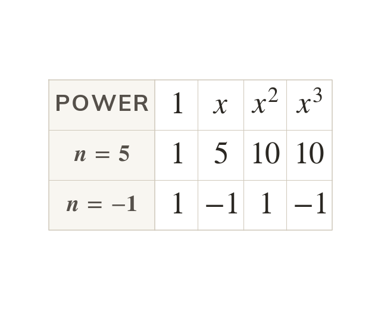
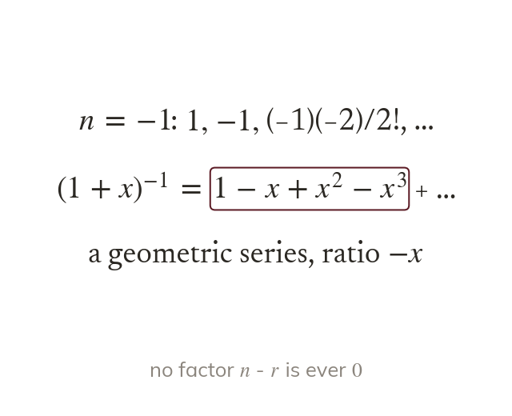
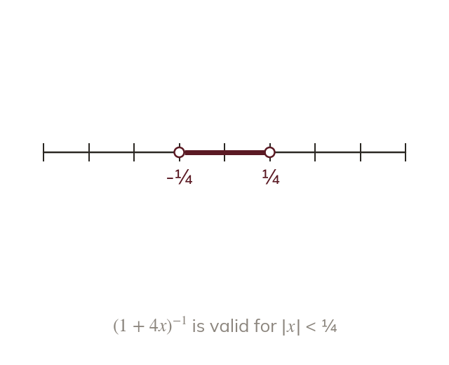
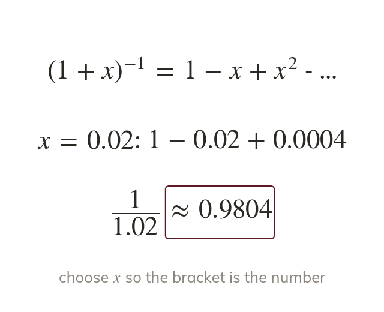
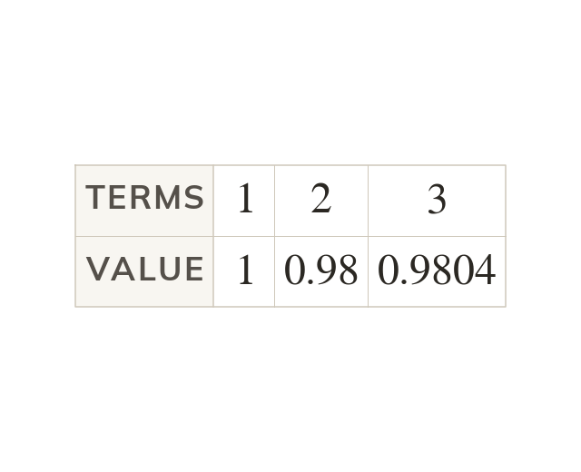
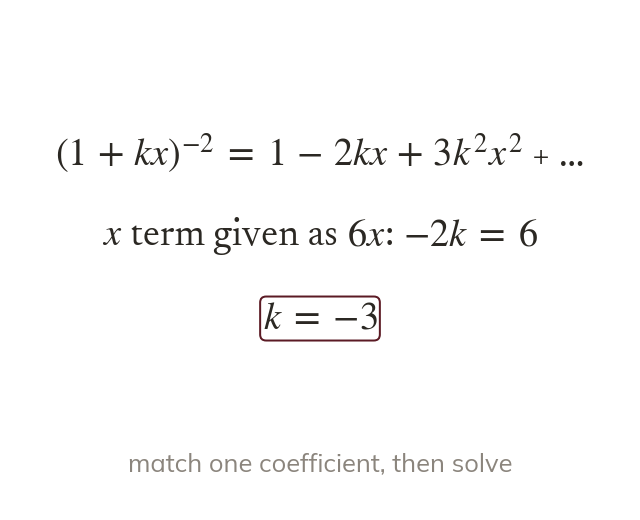

The same formula, any
The coefficients ! and ! need no nCr, so they work for any rational For they give the row of Pascal's triangle.
Pure Year expanded for a positive whole , where the expansion stops. For a negative or fractional it never stops, so we take the first few terms and say where they are valid; extends this to ()ⁿ and to partial fractions.
Work down the page at your own pace. Write every answer in your book first, then click to check it.
Read each card, then follow the worked examples one step at a time.

The coefficients ! and ! need no nCr, so they work for any rational For they give the row of Pascal's triangle.

When is negative or a fraction, no factor - r is ever so the expansion has infinitely many terms. For it is the geometric series

Like a geometric series, the expansion of converges only when |bx| <
For that is so -.
Pick an answer. If it's wrong, the feedback tells you which mistake it was.
Write the blanks in your book first, then tap each one to check.
Read each card, then follow the worked examples one step at a time.

To approximate write it as with
A small inside the range of validity makes each term much smaller than the last.

Each extra term adds less, because each one is multiplied by about . Three terms give correct to d.p.

If a coefficient is given, write the same coefficient from the formula in terms of the unknown and set the two equal. For the term is
Pick an answer. If it's wrong, the feedback tells you which mistake it was.
Write the blanks in your book first, then tap each one to check.
Finished? Next lesson: 13.P4.2 Expanding (a + bx)ⁿ.
For each skill, tap the one that is true for you today. Your Revise pages start with anything you mark Not yet.
Your ratings are saved on this device only.
Log in, then search for a code to practise that skill.